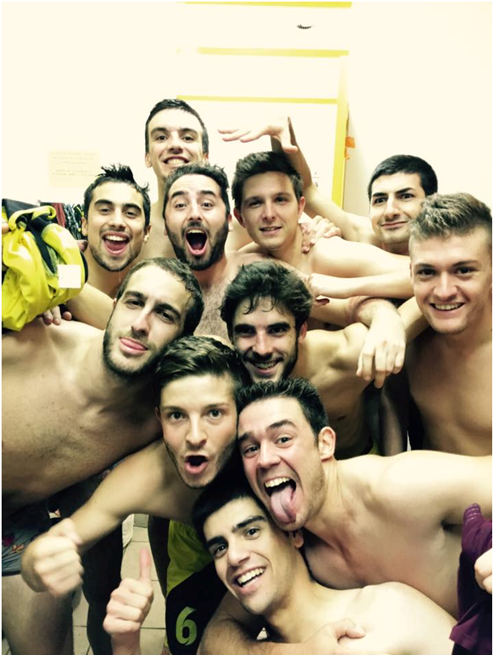
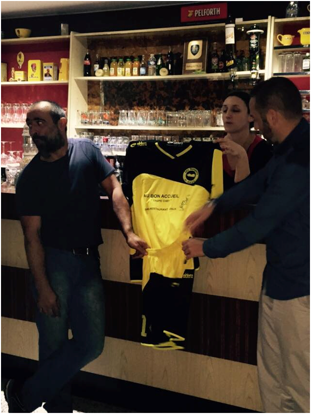

Taoupats - SeilhPar Dédé
Bonjour à tous ! Nous sommes le samedi 1er novembre et nous nous retrouvons pour la 7ème journée de championnat. Voici la composition des Taoupats :Bonjour à tous ! Nous sommes le samedi 1er novembre et nous nous retrouvons pour la 7ème journée de championnat. Voici la composition des Taoupats :
Gardien : Rémy
Défenseurs : Pierre C. – Dédé – Maxime D. – Maxime S.
Milieux : Jo – Edouard
Enzo – Julien B. - Tony
Attaquant : Julien G.
Remplaçants de luxe : Gaëtan – Paul D. - Fabrice
Les Taoupats enchaînent les succès, puisqu’ils en sont à 5 victoires consécutives en championnat. Une victoire ce soir permettrait même de battre le record. Ils sont 2ème du championnat, à égalité de points avec Plaisance et à 1 point de Mondonville.
Face à eux, nous retrouvons Seilh, qui est capable du meilleur (4-1 contre Cadours, 5-0 contre Merville) comme du pire (0-12 contre Plaisance, 0-4 contre l’ASPTT Grand Toulouse). Avec 3 victoire et 3 défaites, ils sont 7ème, dans le ventre mou du championnat.
A noter que le match se déroulera sur une pelouse synthétique, que les Seilhois connaissent bien.
Les notes du coach Guillaume (Agrémenté de quelques précisions de Dédé) :
5’ : Belle combinaison entre Tony et Julien G., mais ce dernier se gêne avec Enzo dans la surface et ils perdent le ballon sans inquiéter le gardien.
30’ : Enorme occasion de Seilh ! Le n°11, couvert par Maxime D. et donc pas hors-jeu, se présente seul face à face avec Rémy. Mais celui-ci est beaucoup trop impressionnant pour le jeune attaquant Seilhois, qui frappe à côté.
38’ : Suite à une belle remontée de balle impliquant Edouard, Jo et Julien B., ce dernier lance Enzo côté droit. L’italien déborde, tente de temporiser le temps que Julien G. daigne se présenter au centre, mais il ne parvient pas à centrer correctement. Les filets tremblent, mais le ballon les a touchés de l’extérieur du terrain.
41’ : Edouard dribble à 40m et lance Julien G., qui parvient à se libérer de son marquage, mais il frappe au-dessus du but.
43’ : Edouard prend en charge un coup franc à 40m, mais le ballon passe une nouvelle fois au-dessus du montant adverse.
La première mi-temps est très difficile pour les Taoupats : en voulant jouer trop vite, nous perdons trop rapidement les ballons.
55’ : Julien B. sort sur blessure à la cheville. Didier se dit qu’il n’est pas venu pour rien. Nous observerons une minute de silence pour les poils qui vont tomber, déchiquetés par le bandage.
57’ : Côté gauche, Tony et Enzo, repositionné à la pointe de l’attaque, réalisent un une/deux. Ils servent Gaëtan, qui frappe sur le gardien.
60’ : Enzo frappe un coup franc à 25m. Le coup franc passe au-dessus.
64’ : Tony effectue une passe en retrait hasardeuse. Elle est récupérée par les Seilhois qui partent en contre-attaque. A 3 contre 1, Maxime D. fait preuve d’autorité et sauve la soirée de son capitaine.
67’ : Edouard combine avec Gaëtan, qui déborde côté droit de la surface. Il tente un tir lobé plein d’audace mais le gardien s’étire et arrête le ballon, que beaucoup voyaient déjà au fond des filets.
77’ : Coup-franc d’Enzo à 40m. Le ballon prend la direction de la lucarne droite, mais le gardien réalise un nouvel arrêt de grande classe.
81’ : Gaëtan lance Paul D. à l’entrée de la surface côté droit. Paul, qui semble hors-jeu, tombe dans la surface. L’arbitre siffle pénalty. Grosse protestation des Seilhois, qui débouche sur deux cartons rouge. Maxime S. ne tremble pas. 1-0 pour les Taoupats. Seilh finira le match à 9.
89’ : Enzo profite des espaces libres et part côté droit depuis les 50m. Il décide de laisser son capitaine à l’écart de l’action et frappe, mais sa tentative passe au-dessus.
90’+1 : Fin du match !
Une belle combativité, solidarité et un comportement exemplaire nous permettent de rentrer à la maison avec 4 points inespérés au regard de la première mi-temps.
La photo gay de la victoire:

La présentation des nouveaux maillots chez notre sponsor « Au bon accueil » :
